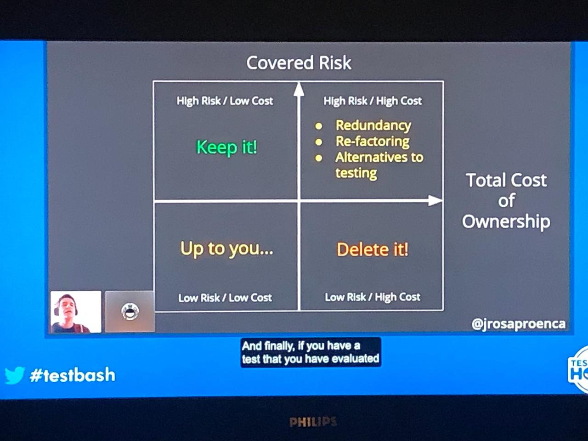
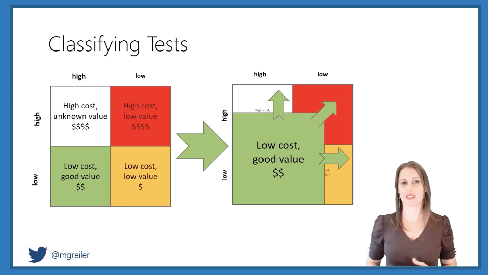
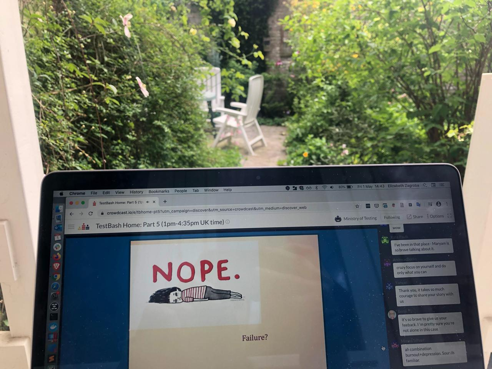
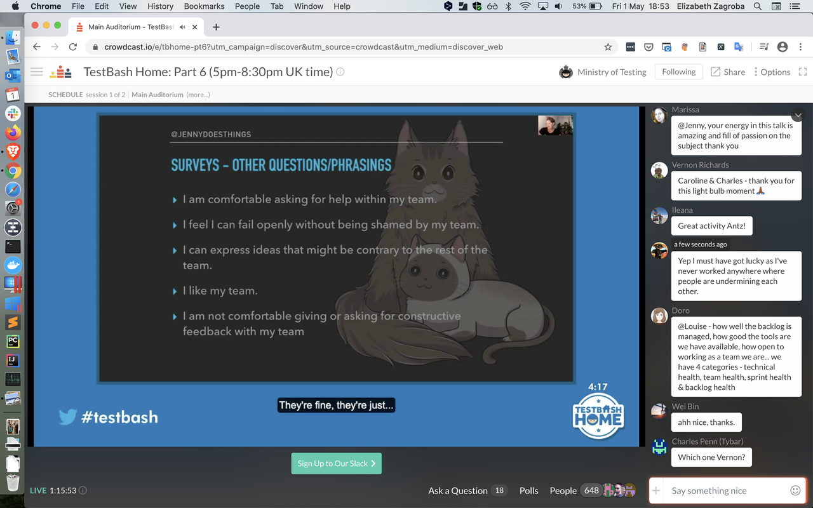

Typing to the people you usually see in person can have the same energy as tweeting at them from across a big room.
TestBash Home, put on by the Ministry of Testing, was a 24-hour around-the-world tour of talks, panels, and coaching from the best of the best. I missed purposely and prudently skipped a big chunk of the schedule to get a good night's sleep and properly absorb what I could attend.
I was definitely overloaded with places to chat (Slack, the video streaming app Crowdcast, Twitter, or the app built for the occasion) simultaneously with the video stream, the same way I would be at an in-person conference. I got that same "I want to hang out more but I'm so tired" feeling I get in real life. Though as Gwen correctly noted, this is real life now.
Cost-Benefit of Automated Tests
João Proença and Michaela Greiler weighed the costs and benefits of continually updating and running automated tests. Coming from two different angles (cognitive biases vs. Ph.D.-level number-crunching), they shared a similar quadrant model to make better decisions about your automation.
João's model on my actual TV screen
Michaela's model
João took a stronger "if it's not providing value, do something about it" approach, whether that's editing the test or deleting it altogether. He asked us to consider: If you were asked to write the same test from scratch today, would you do it the same way? When you need fast feedback, what's the opportunity cost of fixing, or even just running, a particular test? João reminded us to ask "what is being tested?" and decide if that still matters before jumping in to fix a failing test.
Michaela brought a perspective from a much larger software company (Microsoft) than I've worked at before. Her approach left open another option for the fate of tests with questionable value: only run them at certain stages. Only run the tests now where the cost of running them at a later stage is too high. Running tests at the wrong stage can increase false alarms and diagnosis time. Running tests that exercise unchanged code should be avoided.
Michaela's stages
Learning & Teaching
Veerle Verhagen's 99-second talk got me rethinking some learning experiences I've had.
It boiled down to this: learning is easy and teaching is hard. Try everything you've had trouble learning again, but with a better teacher this time. Whoa.
Evil User Stories
Every security talk I've heard tells you to look at the OWASP Top 10 and make a threat model. Anne Oikarinen told us what to do next: make an evil user story. If I were a person who made a mistake, shouldn't have access at all, or received more access to the system than anticipated, what would happen? How could we mitigate those risks?
If your team doesn't know where to start with web security, Anne suggested adding static code analysis tools and exploratory testing to your practice. If you've got outside penetration testers exploring your software, add logging around the issues they trigger so you know better what's happening next time.
I use the big list of naughty strings to test for security vulnerabilities I don't always completely understand. Anne also recommended Hacker 101, a free class about web security.
Live Coaching
James Lyndsay's coaching session reminded me how valuable gathering information and stepping back to ask "what will I learn by performing this test?" are when you're stuck. I've got to go back to my notes from a workshop I took with him a couple years ago to reinforce some of these lessons for myself.
Continuous Delivery Survival Guide
Amy Phillips might be the first person I met where neither of us could remember if we'd met in person before, or if we just knew each other from Twitter. Her talk about surviving continuous delivery from 2017 lives on an essential onboarding guide for testers today.
Amy wants you to have enough context about your new team and their values before you jump into ideas about what you could change. People probably won't come to you to hand things over for the testing phase, so you have to figure out for yourself where you fit into their process. Amy recommended what I think of as "digital archaeology": reading through all the team artifacts to get a sense of their culture. Even if you don't get write access, looking at the customer support tickets, team backlog, and git commits can show you how the team actually works, rather than how they tell you they should work.
Amy really made me laugh when she described learning about the different development environments. Ask what the developers use. Ask what sales uses. Ask how many environments there are, how they're different, and what people's expectations are around them.
You can ask questions without knowing what a good answer is.
Even without knowing how to implement something, you can ask questions about it to trigger developers' wheels to start turning. Looking at the structure of the code and what's been changed may give you ideas about what hasn't been covered.
Burnout
Maryam Umar spoke about being burned out from juggling too many priorities, combined with unmedicated anxiety. Maryam called out how difficult it can be to start from scratch and build a support network when you relocate.
Seemed appropriate to watch this one from the garden
I worried a lot about building a support network before I relocated, but not much since. I'm so glad I've been able to recognize the "this is too much" feeling for myself. Saying no to big but overwhelming opportunities has left space in my life for things I know I want, and greener pastures I couldn't have imagined.
Leadership
This leadership panel made me want to have Nicola Sedgwick, Alessandra Moreira, and Shey Compton in my corner as I transition to a manager position. Obviously (to me at this point in my career and after various other trainings I've participated in) leaders do not have to be people managers, and vice versa. People need to give you permission to lead them. Leaders have a vision they can communicate up and down the chain of command.
The best way to be a leader is to lead by example. Sponsor other people at your organization who you see can be better leaders. Having the technical chops will allow people to believe in your value. It's easy for testers to underestimate our ability to influence behavior, but bug advocacy is a lot about that.
Nicola's framework for sharing feedback is something I'm defintely going to try in a 1-on-1 meeting this week: share an observation, recount the accompanying behavior, and describe the impact.
Morale
Jenny Bramble spoke about bad and good metrics, specifically that morale was the only good one. Morale encompasses psychological safety, emotional health, contentment, pride, deilght, and core values. It's hard to measure, but that also means it's hard to game.
If your team isn't one where people can have negative emotions, disagree, or talk about mistakes or risks, you're doing it wrong. Genuinely asking people how it's going and taking action on the results is the best thing you can do to improve morale.
Possible survey questions to help measure morale
I look forward to Jenny's proposed next talk about the oral history of bugs on teams.
Titles
I'd seen this talk from Martin Hynie on the Ministry of Testing Dojo, and worked with Martin in the past. So I was expecting to be reminded that testing isn't a straightforward observe -> evaluate -> report operation. I'd seen him take on challenges outside the perceived role of tester, and I'd done so myself. I knew that it's easier to create a good artifact if you start by creating an imperfect one and ask people to correct it, rather than starting from scratch.
My biggest takeaway was in the Q&A: Someone's association and past experiences of people with my job title are more meaningful than the job title itself in setting up my working relationship with them.
Optimism
My favorite 99-second talk from the second set was Jen Kitson's about optimism. While we discover and often have to report a lot of bad news as testers, optimism is essential to testing. We notice things, report bugs, and pushing for fixes because we can imagine a world that can be better.
I'm so glad I got to attend TestBash Home. I would listen to Vernon Richards talk about sports balls I don't understand. Gwen Diagram gives me life and energy in a way that I cannot fully explain. There were people I got to see or chat with that I haven't encountered for months, or years, and it felt good. It felt like home.